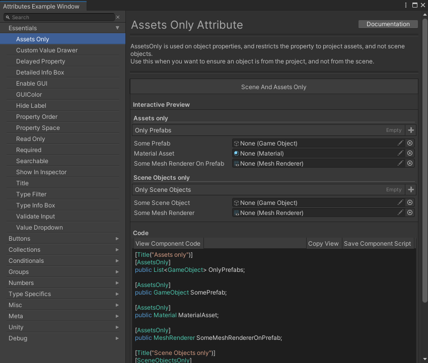

Obdin基础介绍
Odin是一个Unity插件。根据官网介绍，器主要目的是使得用户可以享受强大，可自定义，用户友好的编辑器，而不写一行编辑器代码。即Odin实际是一个编辑器扩展插件，来方便做一些编辑器扩展。
当安装Odin插件后，会在菜单栏Tools中增加一个OdinInpsector选项。
通过GettingStarted可以入门编辑器内容。
可以看到基础有四部分
- OdinAttributesOverview
- OdinEditorWindows
- TheStaticInspector
- TheSerializationDebugger
但是者四部分在Unity中都是使用。文章主要记录基础入门介绍。对于每个部分细节，放在后面深入挖掘。
对于Odin教学，官网有指引： https://odininspector.com/tutorials/using-attributes/simple-attribute-examples
Attributes
通过Odin可以只通过Attributes来设计Unity中的Inspector界面。这里所说的Attributes实际是指C#语言中的Attributes概念，即注解功能。通过注解，而不用写一些注解解释代码，借助Odin我们可以高自由度自定义设计Inspector界面。实际上Unity自身也带有一些属性反射到Inspector界面上的功能，该功能相当于是威力增强版。
在Unity的OdinAttributesOverview中有所有Attributes的分类使用和说明。
在此只根据官方教程，介绍一些基础Attributes以及规则。经验性总结放在后面挖掘。
- 可以组合多条Attributes
例如预览界面
|
|
- 可以用Group来完全修改布局方式
|
|

- 有很多属性可以来引用其他属性内容，方法等来扩展编辑器行为。
|
|

剩下官方介绍了一些常用的属性方式
- GroupAttributes：布局用属性。
- MetaAttributes：被这些标记的属性，当属性变化的时候会调用一些指定方法。
- PropertyOrder：显示层级。
- AttributeExpressions：属性注释。
EditorWindows
Odin插件也可以用来做一些编辑器窗口，用来简化一些工作流程。当然这也会在维护上面带来一些阵痛。
OdinEditorWindow功能基于Unity提供的EditorWindow功能。使用OdinEditorWindow继承该类型即可，继承之后就会获得渲染属性，方法的能力。
也可以继承OdinMenuEditorWindow来获取类似于MenuTree的编辑器界面。
|
|
对于面板的内容可以简单的通过Attributes来设计，配置。
也可以在EditorWindow中渲染任意一个Object。方法是通过重载GetTarget方法，并且传入任意类型的一个实例来实现渲染。该类型不需要可序列化(Serializable)或者必须是一个UnityObject。
StaticInspector
一个静态的Inspector，主要用来监控一些数据。
SerializationDebugger
序列化Debug工具。
经验补充
Dictionary序列化问题
Odin的Dictionary再2018版本后因为prefab改动。导致prefab的序列化出现问题。
目前发现的是，对于场景中的物体，用Odin设置Dictionary中数值后，在运行游戏中并不会生效。不论该物体是否与Prefab相关联。
但是对于ScriptableObject对象Dictionary任然生效可以用来做数据设置